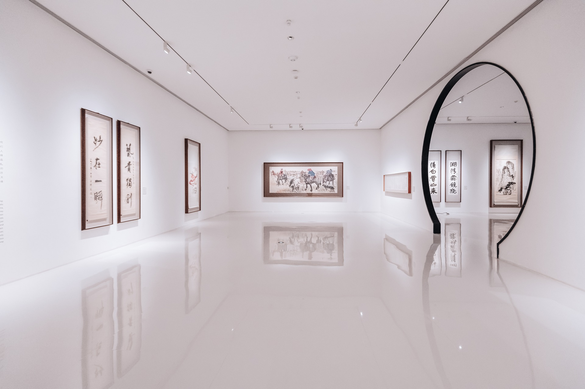

Delta i de olika utställningar som klubben arrangerar. Du kan visa upp din egna konstverk eller bara delta som åskådare. Lokalen som utställningen befinner sig i är sal 325, NTI Johanneberg *Obs endast fredagar*
Ifall du är delux-medlemm eller har varit aktiv i vår klubb i mer än 100år så finns möjligheten att delta i vårt årsmöte där vi disskuterar om klubbens framtida aktiviteter, budget. De som deltar i mötet har kraften att påverka klubben genom att rösta.
Utlandsresor är tillgängliga till alla som är medlem i klubben. Följ med oss när vi besöker olika konstmuseum runt om i världen.
